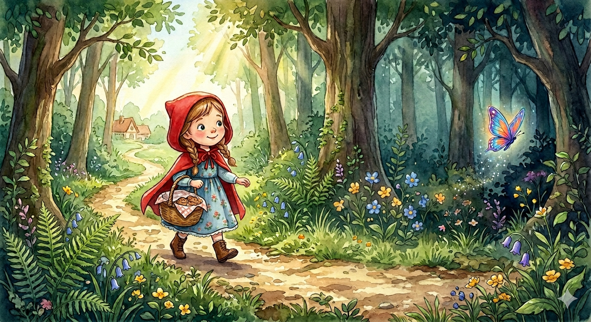

1
Sur la route…
Vous êtes le Petit Chaperon rouge, et votre maman vous remet un panier rempli de délicieux bonbons et gâteaux. La mission est très importante : apporter ce panier à votre grand-mère, qui est malade et habite de l’autre côté de la région. Votre mère vous recommande de toujours rester sur le chemin et de ne pas parler à des inconnus. Votre cape rouge sur les épaules, vous partez.
En entrant dans la forêt, les ombres dansent et semblent murmurer votre nom, éveillant en vous une immense envie d'explorer. Soudain, vous apercevez un papillon brillant qui s'envole hors du chemin. Que faisez-vous ?
A) Vous prenez une profonde inspiration et obéissez à votre mère, en suivant le chemin sûr éclairé par le soleil. (Rendez-vous à 2)
B) Vous décidez de suivre le papillon et d'admirer son magnifique vol chancelant. (Rendez-vous à 3)